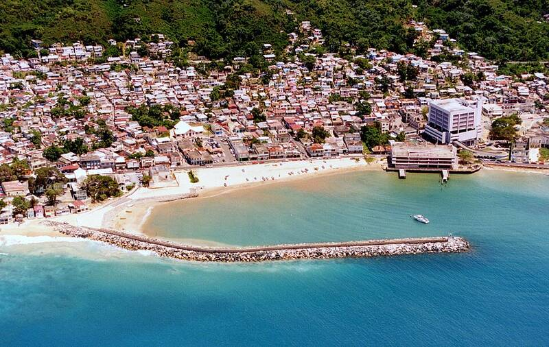

Aguadilla thermal video
Aguadilla, Puerto Rico, April 2013

A U.S. Customs and Border Protection aircraft recorded thermal video of a small object crossing Rafael Hernández Airport at low altitude, then over the ocean, where it appeared to enter and leave the water. A 2015 analysis by the Scientific Coalition for UAP Studies argued it moved faster than the wind and was unexplained, making it one of the best-known transmedium or unidentified submerged object (USO) cases. Skeptics such as Mick West argue it matches a pair of sky lanterns drifting with the wind, and the water entry an effect of the camera's viewing angle. Disputed. 1
Open in the interactive Watcher
Sources
- Aguadilla, Puerto Rico (2013 UFO video) Wikipedia